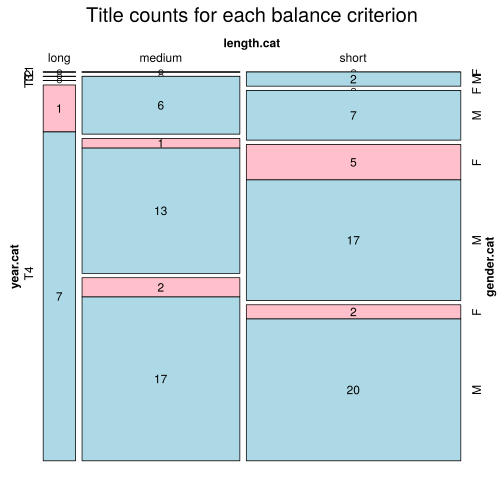

Click on a column heading to sort. Click on a text identifier to read the text (may not work in older browsers).
| Identifier | Encoding | Pages | Words | (Size) | Date (Slot) | Title | Author | Sex | Reprints |
|---|---|---|---|---|---|---|---|---|---|
| SLV00024 |
eltec-1 | 271 | 81449 | (medium) | 1891 (T3) | Od pluga do krone | Bedenek, Jakob (1850-1916) | M | low |
| SLV00048 |
eltec-1 | 140 | 51500 | (medium) | 1896 (T3) | V krvi | Govekar, Fran (1871-1949) | M | high |
| SLV00058 |
eltec-1 | 113 | 37437 | (short) | 1883 (T3) | Ciklamen | Kersnik, Janko (1852-1897) | M | high |
| SLV00072 |
eltec-1 | 197 | 71125 | (medium) | 1897 (T3) | Kam plovemo | Meško, Ksaver (1874-1964) | M | high |
| SLV00090 |
eltec-1 | 54 | 38581 | (short) | 1894 (T3) | Spletke | Štrukelj, Ivan (1869-1948) | M | low |
| SLV00092 |
eltec-1 | 65 | 33297 | (short) | 1892 (T3) | Zmota in povrat | Štrukelj, Ivan (1869-1948) | M | low |
| SLV00094 |
eltec-1 | 148 | 65226 | (medium) | 1881 (T3) | Pomladanski vetrovi | Bartel, Anton (1853-1938) | M | low |
| SLV00098 |
eltec-1 | 109 | 42385 | (short) | 1883 (T3) | Luteranci | Koder, Anton (1851-1918) | M | low |
| SLV00099 |
eltec-1 | 248 | 61988 | (medium) | 1877 (T2) | Marjetica | Koder, Anton (1851-1918) | M | high |
| SLV00103 |
eltec-1 | 76 | 31108 | (short) | 1883 (T3) | Zvezdana | Koder, Anton (1851-1918) | M | low |
| SLV00111 |
eltec-1 | 183 | 62359 | (medium) | 1891 (T3) | Pegam in Lambergar | Detela, Fran (1850-1926) | M | high |
| SLV00112 |
eltec-1 | 112 | 45377 | (short) | 1885 (T3) | Veliki grof | Detela, Fran (1850-1926) | M | high |
| SLV00122 |
eltec-1 | 223 | 77352 | (medium) | 1870 (T2) | Žalost in veselje | Podmilšak, Josip (1845-1874) | M | low |
| SLV00126 |
eltec-1 | 68 | 31611 | (short) | 1892 (T3) | Ljudska osveta | Jaklič, Fran (1868-1937) | M | low |
| SLV00132 |
eltec-1 | 100 | 34687 | (short) | 1895 (T3) | Gorski potoki | Maselj Podlimbarski, Fran (1852-1917) | M | low |
| SLV00135 |
eltec-1 | 143 | 96474 | (medium) | 1894 (T3) | Gospa s pristave | Janežič-Kraljev, Ivan (1855-1922) | M | low |
| SLV00136 |
eltec-1 | 99 | 34186 | (short) | 1891 (T3) | 4000 | Tavčar, Ivan (1851-1923) | M | high |
| SLV00172 |
eltec-1 | 171 | 76466 | (medium) | 1883 (T3) | Milko Vogrin | Sket, Jakob (1852-1912) | M | low |
| SLV00174 |
eltec-1 | 230 | 94344 | (medium) | 1893 (T3) | Abadon | Mencinger, Janez (1838-1912) | M | high |
| SLV00187 |
eltec-1 | 80 | 26560 | (short) | 1885 (T3) | Agitator | Kersnik, Janko (1852-1897) | M | high |
| SLV00194 |
eltec-1 | 185 | 32757 | (short) | 1876 (T2) | Na Žerinjah | Kersnik, Janko (1852-1897) | M | high |
| SLV00216 |
eltec-1 | 138 | 49692 | (short) | 1881 (T3) | Rokovnjači | Jurčič, Josip (1844-1881) | M | high |
| SLV00217 |
eltec-1 | 113 | 43280 | (short) | 1886 (T3) | Slovenski svetec in učitelj | Jurčič, Josip (1844-1881) | M | high |
| SLV00227 |
eltec-1 | 163 | 30130 | (short) | 1887 (T3) | Beatin dnevnik | Pesjak, Luiza (1828-1898) | F | low |
| SLV00231 |
eltec-1 | 100 | 39063 | (short) | 1885 (T3) | Arabela | Pajk, Pavlina (1854-1901) | F | low |
| SLV00234 |
eltec-1 | 69 | 26146 | (short) | 1896 (T3) | Dušne borbe | Pajk, Pavlina (1854-1901) | F | low |
| SLV00240 |
eltec-1 | 340 | 58279 | (medium) | 1897 (T3) | Slučaji usode | Pajk, Pavlina (1854-1901) | F | high |
| SLV00273 |
eltec-1 | 75 | 41688 | (short) | 1899 (T3) | Kvišku | Finžgar, Fran Saleški (1871-1962) | M | low |
| SLV00278 |
eltec-1 | 239 | 78672 | (medium) | 1897 (T3) | Trojka | Detela, Fran (1850-1926) | M | high |
| SLV00279 |
eltec-1 | 272 | 50548 | (medium) | 1877 (T2) | Cvet in sad | Jurčič, Josip (1844-1881) | M | high |
| SLV00310 |
eltec-1 | 89 | 36767 | (short) | 1903 (T4) | Potresna povest | Maselj Podlimbarski, Fran (1852-1917) | M | low |
| SLV00324 |
eltec-1 | 70 | 26476 | (short) | 1917 (T4) | Cvetje v jeseni | Tavčar, Ivan (1851-1923) | M | high |
| SLV00325 |
eltec-1 | 86 | 33931 | (short) | 1916 (T4) | Štefan Zaplotnik | Šorli, Ivo (1877-1958) | M | low |
| SLV00345 |
eltec-1 | 127 | 50219 | (medium) | 1909 (T4) | Blagorodje doktor Ambrož Čander | Levstik, Vladimir (1886-1957) | M | low |
| SLV00352 |
eltec-1 | 74 | 59327 | (medium) | 1910 (T4) | Komisarjeva hči | Fatur, Lea (1865-1943) | F | low |
| SLV00355 |
eltec-1 | 208 | 78814 | (medium) | 1917 (T4) | Mlada ljubezen | Kraigher, Alojz (1877-1959) | M | high |
| SLV00363 |
eltec-1 | 149 | 56512 | (medium) | 1882 (T3) | Malo življenje | Detela, Fran (1850-1926) | M | low |
| SLV00364 |
eltec-1 | 114 | 43466 | (short) | 1908 (T4) | Novo življenje | Detela, Fran (1850-1926) | M | high |
| SLV00373 |
eltec-1 | 105 | 57249 | (medium) | 1900 (T4) | O, ta testament | Jaklič, Fran (1868-1937) | M | low |
| SLV00391 |
eltec-1 | 169 | 70078 | (medium) | 1909 (T4) | Pisana mati | Zbašnik, Fran (1855-1935) | M | low |
| SLV00398 |
eltec-1 | 127 | 40767 | (short) | 1906 (T4) | Martin Kačur | Cankar, Ivan (1876-1918) | M | high |
| SLV00401 |
eltec-1 | 164 | 59654 | (medium) | 1902 (T4) | Na klancu | Cankar, Ivan (1876-1918) | M | high |
| SLV00406 |
eltec-1 | 272 | 94994 | (medium) | 1905 1906 1907 1908 (T4) | Izza kongresa | Tavčar, Ivan (1851-1923) | M | high |
| SLV00410 |
eltec-1 | 119 | 44260 | (short) | 1901 (T4) | Tujci | Cankar, Ivan (1876-1918) | M | high |
| SLV00417 |
eltec-1 | 104 | 71735 | (medium) | 1915 1916 (T4) | Tlačani | Pregelj, Ivan (1883-1960) | M | high |
| SLV00421 |
eltec-1 | 96 | 32352 | (short) | 1895 (T3) | Temni oblaki | Trošt, Ivo (1865-1937) | M | low |
| SLV00425 |
eltec-1 | 60 | 32791 | (short) | 1901 (T4) | Na vojvodskem prestolu | Gruden, Josip (1869-1922) | M | low |
| SLV00452 |
eltec-1 | 114 | 63630 | (medium) | 1903 (T4) | Naš stari greh | Prelesnik, Matija (1872-1905) | M | low |
| SLV00454 |
eltec-1 | 125 | 71146 | (medium) | 1904 (T4) | V smrtni senci | Prelesnik, Matija (1872-1905) | M | low |
| SLV00455 |
eltec-1 | 292 | 62083 | (medium) | 1904 (T4) | Kralj Matjaž | Malovrh, Miroslav (1861-1922) | M | low |
| SLV00456 |
eltec-1 | 53 | 31249 | (short) | 1910 (T4) | Ljubezen in junaštva strahopetnega praporščaka | Malovrh, Miroslav (1861-1922) | M | low |
| SLV00458 |
eltec-1 | 107 | 66787 | (medium) | 1904 (T4) | Pod novim orlom | Malovrh, Miroslav (1861-1922) | M | low |
| SLV00459 |
eltec-1 | 160 | 92352 | (medium) | 1907 (T4) | Strahovalci dveh kron | Malovrh, Miroslav (1861-1922) | M | low |
| SLV00460 |
eltec-1 | 63 | 49115 | (short) | 1909 (T4) | V študentskih ulicah | Malovrh, Miroslav (1861-1922) | M | low |
| SLV00461 |
eltec-1 | 53 | 40327 | (short) | 1909 (T4) | Zadnji rodovine Benalja | Malovrh, Miroslav (1861-1922) | M | low |
| SLV00473 |
eltec-1 | 182 | 68503 | (medium) | 1895 (T3) | Groga in drugi | Murnik, Rado (1870-1932) | M | high |
| SLV00476 |
eltec-1 | 95 | 34406 | (short) | 1917 (T4) | Na Bledu | Murnik, Rado (1870-1932) | M | low |
| SLV00478 |
eltec-1 | 218 | 38471 | (short) | 1918 (T4) | Gadje gnezdo | Levstik, Vladimir (1886-1957) | M | high |
| SLV00483 |
eltec-1 | 568 | 126286 | (long) | 1913 (T4) | Za svobodo in ljubezen | Levstik, Vladimir (1886-1957) | M | low |
| SLV00496 |
eltec-1 | 106 | 61974 | (medium) | 1904 (T4) | Iz modernega sveta | Finžgar, Fran Saleški (1871-1962) | M | high |
| SLV00497 |
eltec-1 | 57 | 31908 | (short) | 1903 (T4) | Moja duša vasuje | Finžgar, Fran Saleški (1871-1962) | M | high |
| SLV00498 |
eltec-1 | 80 | 50287 | (medium) | 1912 (T4) | Sama | Finžgar, Fran Saleški (1871-1962) | M | high |
| SLV00502 |
eltec-1 | 60 | 35526 | (short) | 1905 (T4) | V burji in strasti | Fatur, Lea (1865-1943) | F | low |
| SLV00506 |
eltec-1 | 131 | 102588 | (long) | 1909 (T4) | Za Adrijo | Fatur, Lea (1865-1943) | F | low |
| SLV00526 |
eltec-1 | 306 | 113106 | (long) | 1911 1912 1913 (T4) | Hči grofa Blagaja | Murnik, Rado (1870-1932) | M | low |
| SLV10001 |
eltec-1 | 30112 | (short) | 1904 (T4) | Hiša Marije Pomočnice | Cankar, Ivan (1876-1918) | M | high | |
| SLV10002 |
eltec-1 | 36032 | (short) | 1876 (T2) | Zadnji dnevi v Ogleju | Carli Lukovič, Alojz (1846-1891) | M | low | |
| SLV10003 |
eltec-1 | 33829 | (short) | 1836 (T1) | Sreča v nesreči | Cigler, Janez (1792-1867) | M | high | |
| SLV10004 |
eltec-1 | 38272 | (short) | 1905 (T4) | Nebesa | Fajdiga, Ivan (1854-1935) | M | low | |
| SLV10005 |
eltec-1 | 139672 | (long) | 1907 (T4) | Pod svobodnim soncem | Finžgar, Fran Saleški (1871-1962) | M | high | |
| SLV10006 |
eltec-1 | 37969 | (short) | 1910 (T4) | Žena | Jelenc, Vitomir Feodor (1885-1922) | M | low | |
| SLV10007 |
eltec-1 | 66801 | (medium) | 1866 (T2) | Deseti brat | Jurčič, Josip (1844-1881) | M | high | |
| SLV10008 |
eltec-1 | 21557 | (short) | 1876 (T2) | Med dvema stoloma | Jurčič, Josip (1844-1881) | M | high | |
| SLV10009 |
eltec-1 | 34494 | (short) | 1876 (T2) | Doktor Zober | Jurčič, Josip (1844-1881) | M | high | |
| SLV10010 |
eltec-1 | 22555 | (short) | 1873 (T2) | Ivan Erazem Tatenbah | Jurčič, Josip (1844-1881) | M | high | |
| SLV10011 |
eltec-1 | 21126 | (short) | 1877 (T2) | Lepa Vida | Jurčič, Josip (1844-1881) | M | high | |
| SLV10012 |
eltec-1 | 43221 | (short) | 1884 (T3) | Kmetski triumvirat | Koder, Anton (1851-1918) | M | low | |
| SLV10013 |
eltec-1 | 25942 | (short) | 1904 (T4) | Mladi gozdar | Kovačič, Ivo (1873-1936) | M | low | |
| SLV10014 |
eltec-1 | 42113 | (short) | 1907 (T4) | Nada | Kveder, Zofka (1878-1926) | F | high | |
| SLV10015 |
eltec-1 | 58750 | (medium) | 1914 (T4) | Njeno življenje | Kveder, Zofka (1878-1926) | F | high | |
| SLV10016 |
eltec-1 | 75393 | (medium) | 1886 (T3) | Zadnji samotar | Mahnič, Anton (1850-1920) | M | low | |
| SLV10017 |
eltec-1 | 263845 | (long) | 1903 (T4) | Tolovajski glavar Črni Jurij in njegovi divji tovariši | Malovrh, Miroslav (1861-1922) | M | low | |
| SLV10018 |
eltec-1 | 173975 | (long) | 1913 (T4) | Gospodin Franjo | Maselj Podlimbarski, Fran (1852-1917) | M | high | |
| SLV10019 |
eltec-1 | 79078 | (medium) | 1917 (T4) | Ptički brez gnezda | Milčinski, Fran (1867-1932) | M | high | |
| SLV10020 |
eltec-1 | 42274 | (short) | 1898 (T3) | Fata morgana | Nadlišek, Marica (1867-1940) | F | low | |
| SLV10021 |
eltec-1 | 23025 | (short) | 1896 (T3) | Judita | Pajk, Pavlina (1854-1901) | F | low | |
| SLV10022 |
eltec-1 | 33533 | (short) | 1910 (T4) | Mina | Prepeluh, Albin (1881-1937) | M | low | |
| SLV10023 |
eltec-1 | 28150 | (short) | 1870 (T2) | Zorin | Stritar, Josip (1836-1923) | M | high | |
| SLV10024 |
eltec-1 | 51178 | (medium) | 1875 (T2) | Sodnikovi | Stritar, Josip (1836-1923) | M | high | |
| SLV10025 |
eltec-1 | 54735 | (medium) | 1876 (T2) | Gospod Mirodolski | Stritar, Josip (1836-1923) | M | high | |
| SLV10026 |
eltec-1 | 59067 | (medium) | 1919 (T4) | Visoška kronika | Tavčar, Ivan (1851-1923) | M | high | |
| SLV10027 |
eltec-1 | 36344 | (short) | 1911 (T4) | Libera nos a malo | Vodeb, Emil (1880-1921) | M | low | |
| SLV10028 |
eltec-1 | 54552 | (medium) | 1889 (T3) | Pobratimi | Vošnjak, Josip (1834-1911) | M | low | |
| SLV10029 |
eltec-1 | 31536 | (short) | 1889 (T3) | Rošlin in Vrjanko | Kersnik, Janko (1852-1897) | M | high | |
| SLV10030 |
eltec-1 | 124925 | (long) | 1921 (T4) | Svitanje | Govekar, Fran (1871-1949) | M | low | |
| SLV10031 |
eltec-1 | 141667 | (long) | 1911 (T4) | Brambovci | Lah, Ivan (1881-1938) | M | low | |
| SLV10032 |
eltec-1 | 90441 | (medium) | 1900 (T4) | Z viharja v zavetje | Zbašnik, Fran (1855-1935) | M | low | |
| SLV20001 |
eltec-1 | 31867 | (short) | 1859 (T1) | Mlinarjev Janez | Kočevar, Ferdo (1833-1878) | M | high | |
| SLV20002 |
eltec-1 | 34143 | (short) | 1884 (T3) | Miklova Zala | Sket, Jakob (1852-1912) | M | high | |
| SLV30001 |
eltec-1 | 27044 | (short) | 1913 (T4) | S poti | Cankar, Izidor (1886-1958) | M | high |